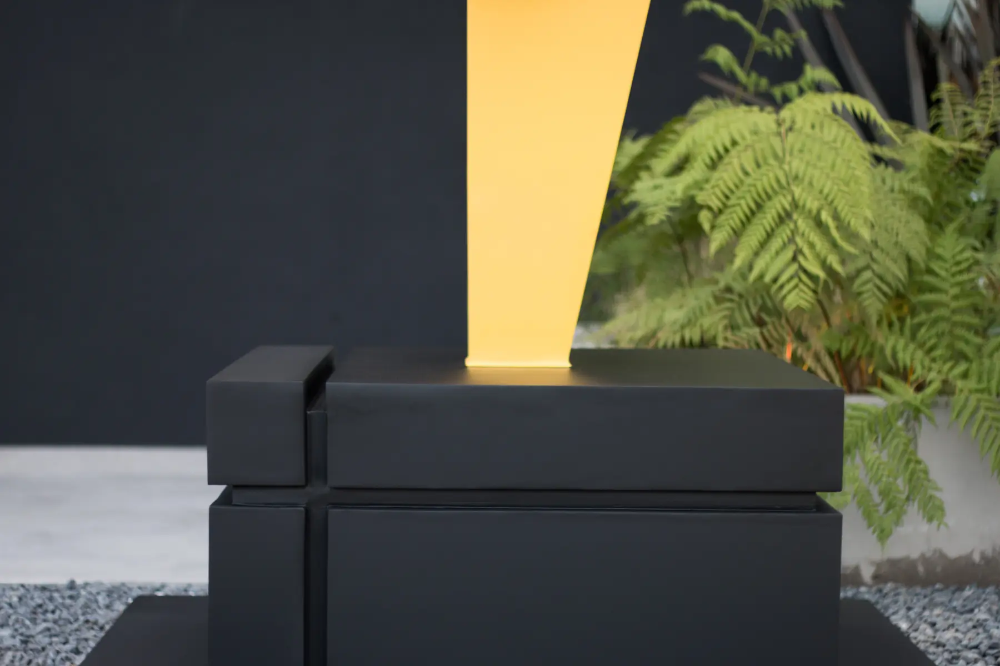
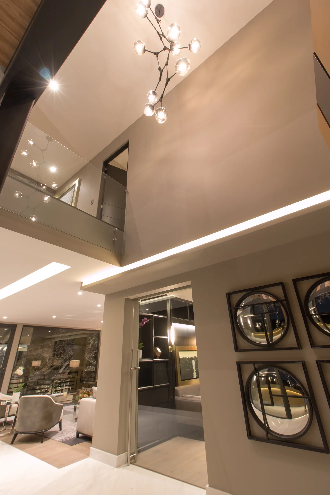
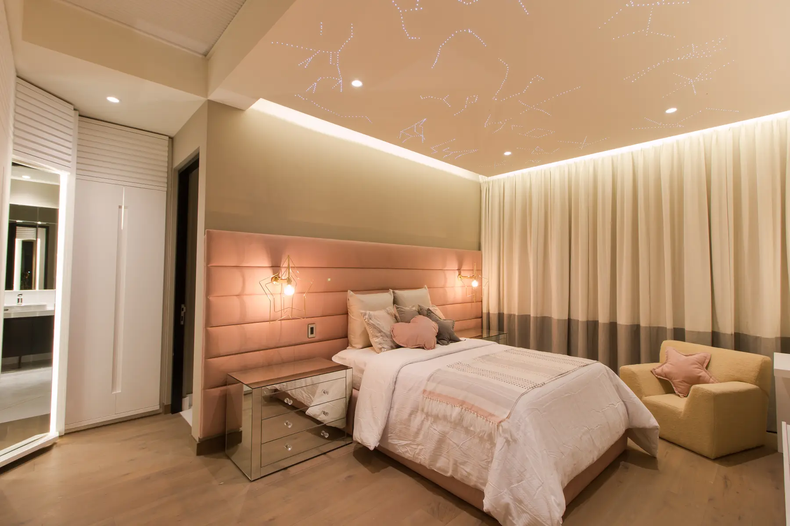
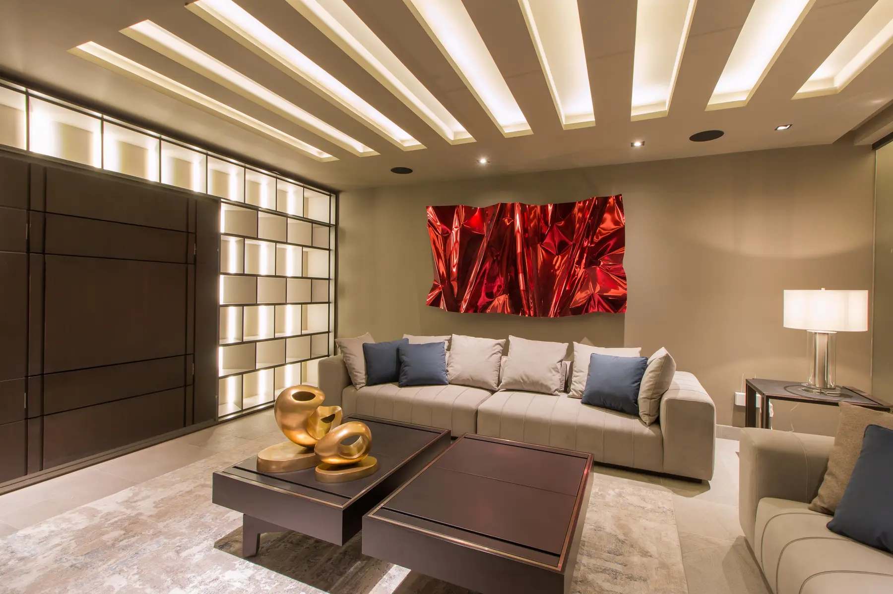
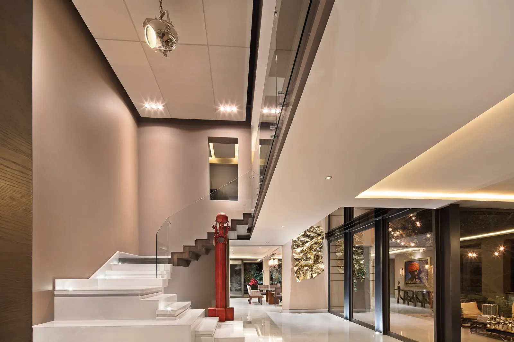
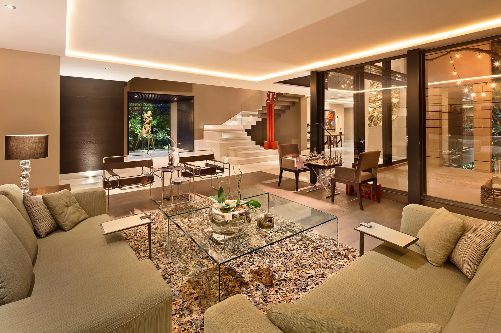
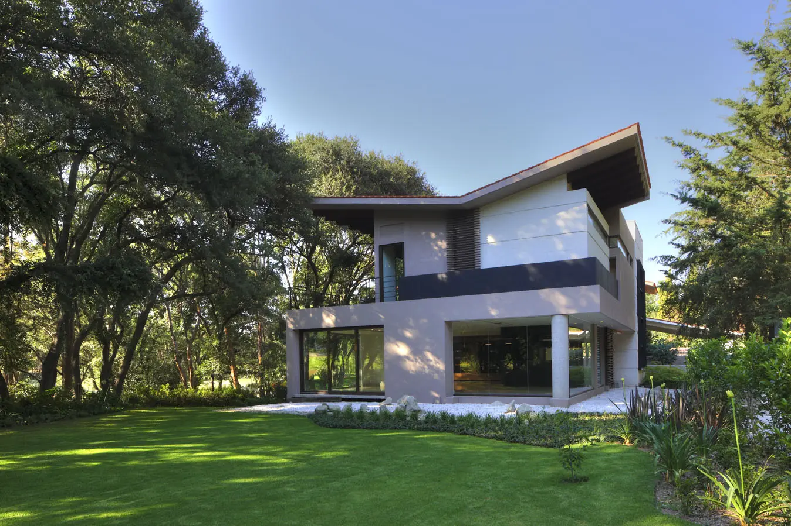

Obra
mimbres
Residencia










Aquí el interior lleva la voz: materiales que piden la mano, texturas tejidas y una luz cálida que sostiene las estancias a lo largo del día. La fachada acompaña; lo que se recuerda es cómo se está adentro.
Siguiente obra

siguiente obra: vallescondido el parque ver la obraasí puede empezar la tuya
Cada obra de este archivo empezó con una conversación sobre una forma de vivir. La siguiente conversación puede ser la tuya.
Agenda una primera conversación